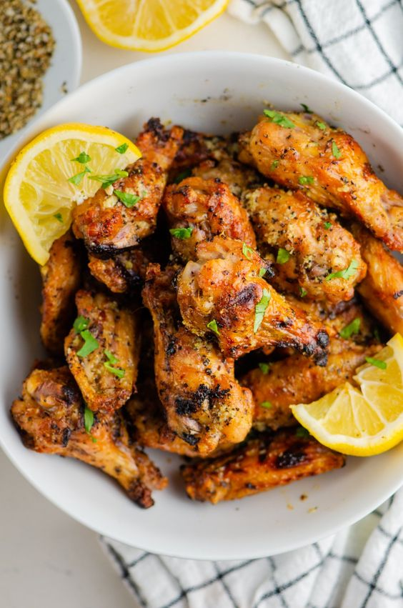
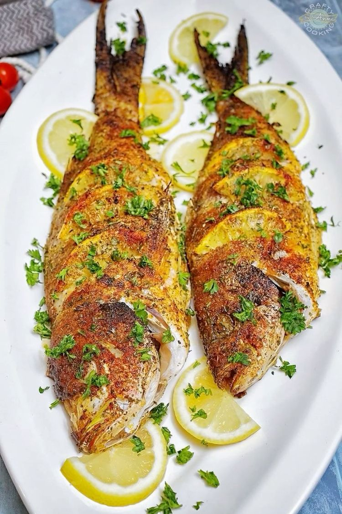
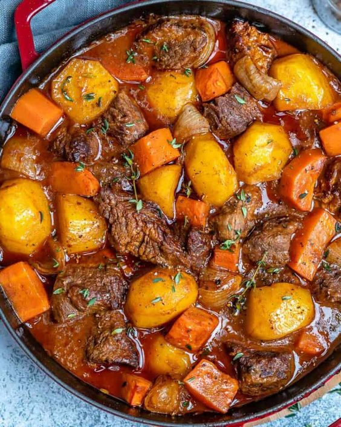
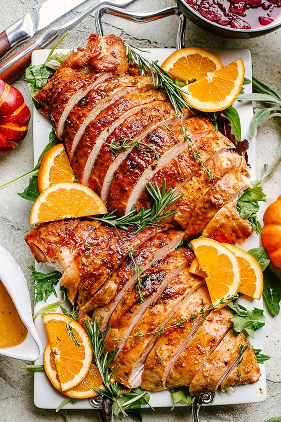

{% extends 'base.html' %} {% block content %}
{% block title %}THE DINNER BAR{% endblock %}
Lemon Pepper Chicken Drummies

- 1 pound chicken drummies
- ¼ cup freshly squeezed lemon juice
- All purpose seasoning to taste
- 2 tablespoons vegetable oil, or as needed
- 2 medium lemons, zested
- Freshly ground black pepper to taste
- 1 tablespoon butter
- 1 tablespoon of soysauce
Method
- Clean pat dry chicken drummies with paper towels and set into a bowl
- Pour lemon juice evenly over drummies and sprinkle with all purpose seasoning
- Toss until well combined
- Preheat the oven to 375 degrees F (190 degrees C).
- Heat vegetable oil in a cast iron skillet over medium-high heat
- Add drummies to hot oil and cook, turning occasionally, until chicken is cooked through
- Remove cooked drummies from the skillet and transfer into a bowl
- Melt butter in a microwave safe container
- Pour seasoned butter over chicken drummies and mix well
- Mix in lemon zest and black pepper until well combined
- Bake in the preheated oven until skin is crisp
- Remove from oven and sprinkle with additional lemon zest and pepper to taste
Fish Recipe

Ingredients
- 4 tilapia fillets
- 1/4 cup unsalted butter, melted
- 2 tablespoons freshly squeezed lemon juice
- 2 teaspoons minced garlic
- 1/2 teaspoon salt, black pepper and paprika
- Lemon wedges and fresh parsley, for garnish
Method
- Preheat the oven to 400°F (200°C)
- In a bowl,mix melted butter, lemon juice, garlic, salt, black pepper, paprika
- Brush both sides of the fish with the butter mixture.
- Bake in the preheated oven for 10-12 minutes
- Serve hot with lemon wedges and fresh parsley for garnish.
- Enjoy your delicious and healthy baked lemon garlic butter tilapia!
Meat Recipe

- pounds beef stew meat, cut into 1-inch pieces
- ¼ cup all-purpose flour
- ½ teaspoon salt
- ½ teaspoon ground black pepper
- 1 ½ cups beef broth
- 4 medium carrots, sliced
- 3 medium potatoes, diced
- 1 medium onion, chopped
- 1 stalk celery, chopped
Method
- Clean pat dry chicken drummies with paper towels and set into a bowl
- Pour lemon juice evenly over drummies and sprinkle with all purpose seasoning
- Toss until well combined
- Preheat the oven to 375 degrees F (190 degrees C).
- Heat vegetable oil in a cast iron skillet over medium-high heat
- Add drummies to hot oil and cook, turning occasionally, until chicken is cooked through
- Remove cooked drummies from the skillet and transfer into a bowl
- Melt butter in a microwave safe container
- Pour seasoned butter over chicken drummies and mix well
- Mix in lemon zest and black pepper until well combined
- Bake in the preheated oven until skin is crisp
- Remove from oven and sprinkle with additional lemon zest and pepper to taste
Turkey Recipe

- 3 gallons peanut oil for frying, or as needed
- 1 (12 pound) whole turkey, neck and giblets removed
- 1 medium onion, chopped
- 1 stalk celery, chopped
- 2 tablespoons vegetable oil, or as needed
- 2 medium lemons, zested
- ¼ cup Creole seasoning
- 1 medium white onion
Method
- Fill a turkey fryer or large stockpot with enough oil to fry turkey
- Heat oil to 400 degrees F (200 degrees C).
- Layer a large platter with food-safe paper bags.
- Rinse turkey and thoroughly pat dry with paper towels.
- Rub seasoning inside the cavity and all over the outer surfaces
- Make sure the hole at the neck is open at least 2 inches
- Turn off the heat source turkey
- Turn on the heat source and cook, maintaining oil temperature
- Carefully remove the basket from the fryer and drain turkey
- Transfer turkey to the prepared platter to finish draining, 10 to 15 minutes.
{% endblock %}